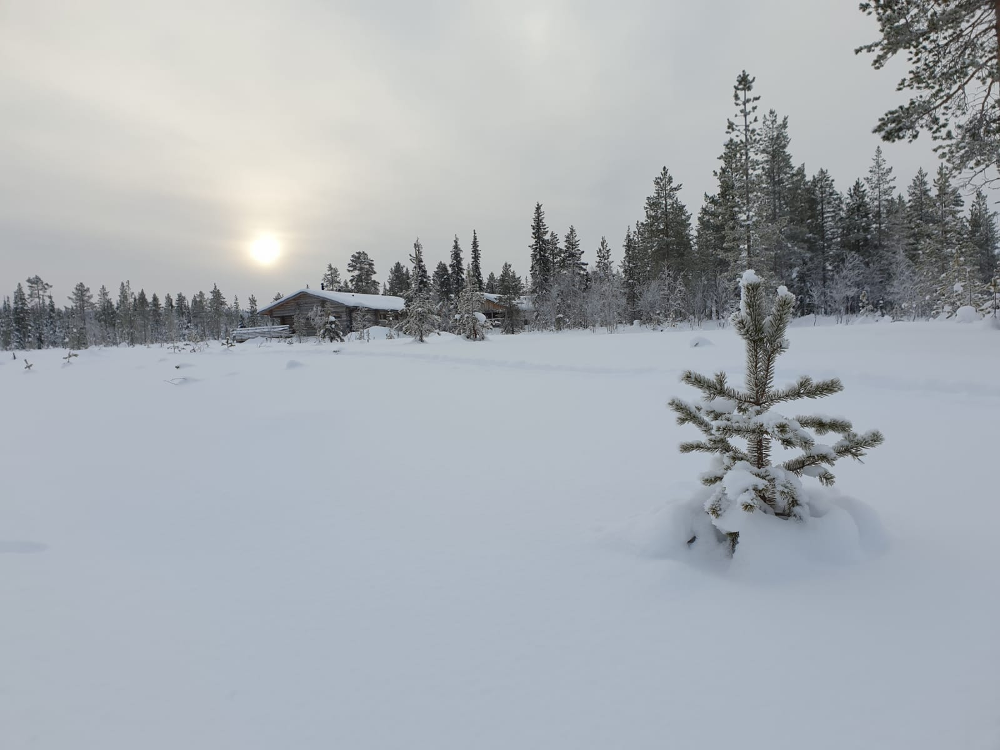

Ulkoilu on hyväksi terveydellesi
Luonnossa liikkuminen voi hyvinkin laskea stressitasoja ja fyysinen kunto kehittyy.

Hengitä syvään ja nauti ympäristöstäsi
Voit pysähtyä polun varrelle ja katsella rauhassa ympärille mitä näet ja tunnet.

Talvellakin voi ulkoilla
Talviulkoilu on vain pukeutumiskysymys. Raikas ilma piristää ja illalla uni tulee paremmin, verratuna että olisi ollut koko päivän sisällä.